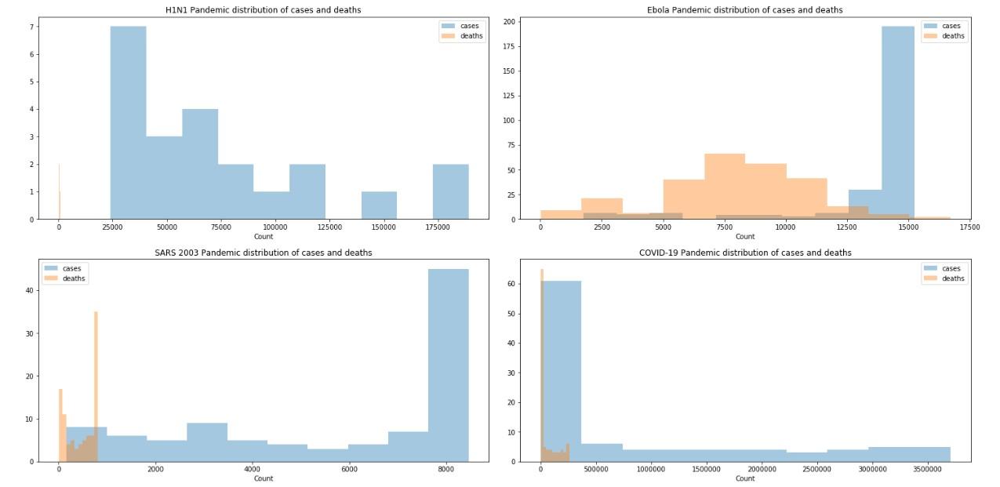

Our main idea is to analyze the new Coronavirus and the H1N1, Ebola and SARS 2003 pandemics. We want to perform exploratory analysis on these three pandemics in order to identify common patterns with Coronavirus. We also want to analyze the pandemic in different countries with reference to their population, health facilities, and finally we use machine learning and try to forecast its spread.
The first of our analysis is to perform exploratory analysis for all the pandemics in order to understand them better. This analysis will gives us the opportunity to identify probable patterns between them and the new Coronavirus, leading us to a better understanding of the new pandemic. So the first step is to find the cases and deaths distribution for each pandemic. The results can be seen in the following figure.
At first, we can see that from the data distribution for cases and deaths, Coronavirus doesn't look like any other pandemic. However, we continue our exploratory analysis and perform time series analysis for cases and deaths for every pandemic. The figures below show how the pandemics evolved.
Regarding the figures that follow, we would like to let you know that they are interactive. By clicking on the options inside the legend you can either remove or add them to the plot. This way, you can perform whichever comparison you want.
We also continued our analysis with plotting the cases and deaths in the top 10 countries affected from each disease. What we want to achive is finding patterns among the countries in any case so we can get a better understanding of the current situation. Initially in the figures below we see the time analysis for the cases.
Finally, we study the death time analysis for the same countries for each pandemic. The results are shown in the figure below.
Moreover, we plotted global maps for each pandemic, where the size of the points is corresponding to the number of cases each countries had. Also, the pins countain the number of deaths.
H1N1 map
Ebola map
SARS 2003 map
Coronavorus-19 map
Finally, to finish the first part of our analysis we plotted time maps so as to show how each pandemic spread throughout its duration.